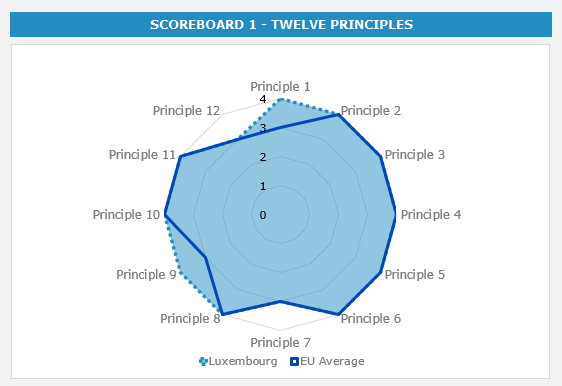
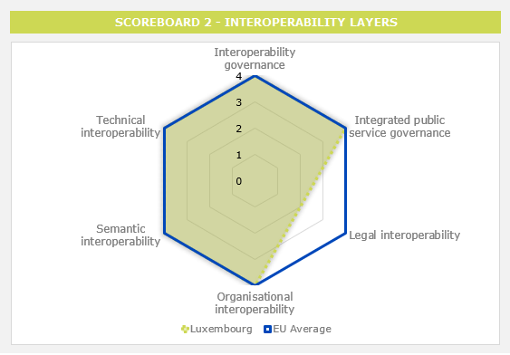
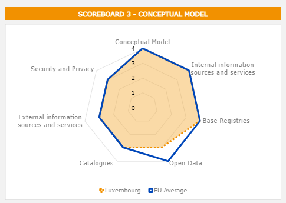
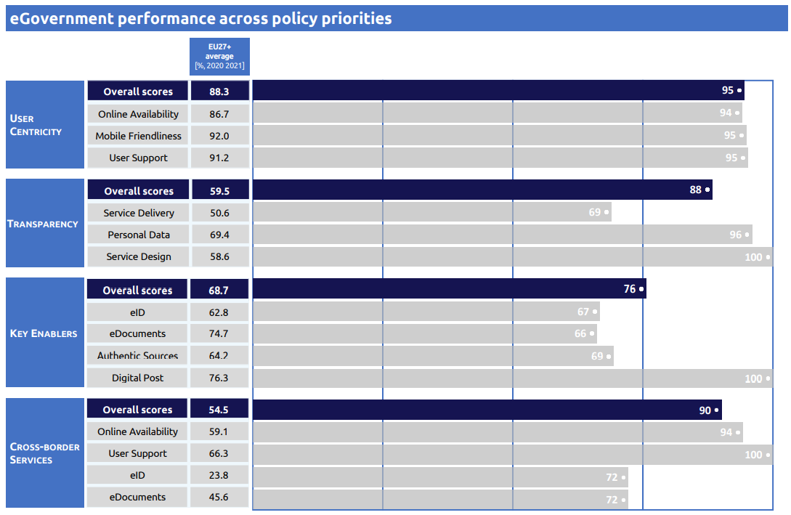
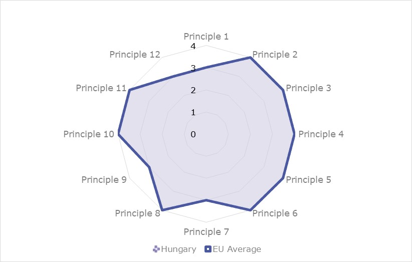

Table of Contents
Table of ContentsISA2
Table of ContentsDigital Public Administration factsheet 2022
Luxembourg
2 Digital Public Administration Highlights 10
3 Digital Public Administration Political Communications 12
4 Digital Public Administration Legislation 22
5 Digital Public Administration Governance 29
6 Digital Public Administration Infrastructure 34
7 Cross border Digital Public Administration Services 43
Country
Profile
1
The following graphs present data for the latest Generic Information Society Indicators for Luxembourg compared to the EU average. Statistical indicators in this section reflect those of Eurostat at the time the Edition is being prepared.
Percentage of individuals using the Internet for interacting with public authorities in Luxembourg | Percentage of individuals using the Internet for obtaining information from public authorities in Luxembourg |
Percentage of individuals using the Internet for downloading official forms from public authorities in Luxembourg | Percentage of individuals using the Internet for sending filled forms to public authorities in Luxembourg |
In 2017, the European Commission published the European Interoperability Framework (EIF) to give specific guidance on how to set up interoperable digital public services through a set of 47 recommendations. The picture below represents the three pillars of the EIF around which the EIF Monitoring Mechanism was built to evaluate the level of implementation of the EIF within the Member States. It is based on a set of 71 Key Performance Indicators (KPIs) clustered within the three main pillars of the EIF (Principles, Layers and Conceptual model), outlined below.
Source: European Interoperability Framework Monitoring Mechanism 2021
For each of the three pillars, a different scoreboard was created to breakdown the results into their main thematic areas (i.e. the 12 principles of interoperability, the interoperability layers and the components of the conceptual model). The thematic areas are evaluated on a scale from one to four, where one means a lower level of implementation and 4 means a higher level of implementation. The graphs below show the result of the third EIF Monitoring Mechanism data collection exercise for Luxembourg in 2021.

Source: European Interoperability Framework Monitoring Mechanism 2021
The results of Luxembourg related to Scoreboard 1 show an overall very good implementation of the EIF Principles. Luxembourg has a higher performance in the implementation of Principle 1 (Subsidiarity and Proportionality) and Principle 9 (Multilingualism) in comparison with the EU average. More specifically, Luxembourg scores high in the alignment of national interoperability frameworks and interoperability strategies with the EIF (Principle 1 – Recommendation 01), the use of information systems and technical architectures that cater for multilingualism when establishing a European public service (Principle 9 – Recommendation 16). The areas of improvement of Luxembourg with regard to Scoreboard 1 are located in Principle 7 (Inclusion and Accessibility) and in Principle 12 (Assessment of Effectiveness and Efficiency). In particular, a higher accessibility of public services by all, in line with commonly agreed e-accessibility specifications and a greater extent to which public administrations evaluate the efficiency and effectiveness of interoperability solutions would allow the country to reach a maximum score of 4 in Principle 7 and 12, respectively.

Source: European Interoperability Framework Monitoring Mechanism 2021
Luxembourg’s results for the implementation of interoperability layers assessed for Scoreboard 2 highlight an overall good performance. Luxembourg obtains maximum scores of 4 in all the interoperability layers with exception for legal interoperability, where it has a score of 2. The latter could be improved by increasing the extent to which legislation is screened to identify any barriers to interoperability (Recommendation 27). The overall high scores of Luxembourg demonstrate the sound implementation of almost all the recommendations related to the layers.

Source: European Interoperability Framework Monitoring Mechanism 2021
The scores of Luxembourg assessing the Conceptual Model in Scoreboard 3 show a good performance in the implementation of corresponding recommendations as it meets the EU average for almost all of them. However, an area for improvement can be identified regarding the establishment of procedures and processes to integrate opening of data in common business processes, working routines, and in the development of new information systems (Open Data - Recommendation 41).
Additional information on Luxembourg’s results on the EIF Monitoring Mechanism is available online through interactive dashboards.
The graph below presents the main highlights of the latest eGovernment Benchmark Report, an assessment of eGovernment services in 36 countries: the 27 European Union Member States, as well as Iceland, Norway, Montenegro, the Republic of Serbia, Switzerland, Turkey, Albania and Macedonia (referred to as the EU27+).
The study evaluates online public services on four dimensions:
The 2022 report presents the biennial results, achieved over the past two years of measurement of all nine life events used to measure the above-mentioned key dimensions. More specifically, these life events are divided between seven ‘Citizen life events’ (Starting a small claim procedure, Moving, Owning a car, Health measured in 2021, and Career, Studying, Family life, measured in 2020) and two ‘Business life events’ (Regular Business Operations, measured in 2021, and Business start-up, measured in 2020).

Source: eGovernment Benchmark Report 2022 Country Factsheets
2
Digital Public Administration Highlights
Digital Public Administration Political Communications |
In October 2021, Luxembourg’s government put forward the ultra-high speed broadband strategy 2021-2025, which follows the government’s broader objective of fostering a digital society that benefits all residents. The strategy defines five main objectives:
In the framework of the national 5G strategy, in October 2021, the Department of Media, Connectivity and Digital Policy launched a call for project.
Digital Public Administration Legislation |
On 11 November 2021, the Luxembourgish Parliament adopted the law transposing the directive 2019/1024 on open data and the re-use of public sector information. Two key elements of the new law are a significant extension of the scope and the introduction of high-value datasets.
In December 2021, the Government amended the Law of 16 May 2019 on Electronic Invoicing in Public Procurement and Concession Contracts, aiming to make electronic invoicing mandatory in B2G transactions in order to contribute to the reduction of the administrative burden on back offices, while digitalising the invoicing process.
Digital Public Administration Governance |
Regarding the digital axe, Luxinnovation, the national innovation agency, under the supervision of the Ministry of the Economy has set up a new Digital Transformation department responsible for all digital transformation matters. In particular, this department supports companies in their digital transformation according to their own degree of maturity and their own vision.
Digital Public Administration Infrastructure |
Since February 2022, a feedback channel has been made publicly available via a participative platform by the Ministry for Digitalisation. It is expected to gather feedback from citizens and companies on specific administrative processes via online polls.

Digital Public Administration Political Communications
3
Ministry for Digitalisation Strategic Axes
On 11 January 2020, the Ministry for Digitalisation announced the four strategic axes to achieve a full transition to a digital government, setting the objectives and priorities for the upcoming years.
The Ministry also announced that the objectives and the initiatives defined under each axis can only be achieved by applying a collaborative approach to innovation and by facilitating technological innovation.
The Ministry’s strategic axes are the following:
eGovernance Strategy 2021–2025
In February 2021, the Government Council adopted the eGovernance Strategy for 2021–2025, jointly developed by the Ministry for Digitalisation and the Government IT Centre (Centre des technologies de l'information de l'État, CTIE). The Governing Council also mandated the Inter-ministerial Committee for Digitalisation to coordinate the implementation of this strategy.
One of the strategic axes of the Ministry for Digitalisation aims to strengthen eGovernment and enable the transition to a digital government, a concept which designates the use of technologies within the framework of State modernisation strategies with the objective of creating real added value for citizens, businesses and public administrations.
The eGovernance Strategy forms part of this approach by setting the essential elements for a successful digital transition of the State in order to ensure quality digital services and to guarantee a gradual transition to a digital government, as recommended by international organisations.
The 2021–2025 strategy highlights the principles to be respected when digitising public services in order to offer citizens and businesses public services that meet their needs. The goal is promoting transversal digital accessibility, developing user-centred services, offering attractive online public services and investing in citizens’ trust in online State services.
Furthermore, the strategy analyses the essential conditions for the central public administration so as to enable it to respond effectively to the needs of society. The overarching objectives in the digital context are to facilitate the transition to an efficient paperless administration and to have an information technology (IT) environment conducive to new ways of working.
Finally, the strategy underlines the importance of being able to rely on a central IT partner who is competent, agile and reliable. To this aim, the CTIE aims to strengthen its digitalisation services, develop cutting-edge infrastructures and further guarantee very high levels of security and reliability.
Einfach Lëtzebuerg
The government has been committed to administrative reform and simplification for several years now and much progress has already been made, notably under the programme Einfach Lëtzebuerg.
However, the simplification of administrative formalities and procedures is continually evolving. Drawing on technological advances in particular, the programme aims to provide a simple and predictable framework for citizens and companies in their relations with the State. Any new project, legislation, procedure or adaptation of existing ones, when deemed necessary, needs to be respectively considered or reconsidered in light of the ‘digital’ component.
The digitalisation and simplification of State administrations must proceed in parallel to reach the desired outcome and all Ministries and administrations have concrete digitalisation projects on their agenda. Therefore, there is a need to consolidate and amalgamate efforts to provide Luxembourg with an exemplary administration that will contribute to its economic attractiveness. In this framework, the Ministry for Digitalisation has launched the zesumme-vereinfachen.lu platform in February 2022.
Digital Luxembourg
Digital Luxembourg considers that IT has become both a vital sector of the economy and an important influence factor in all socio-economic sectors, which makes it an essential component of the government’s policy of rationalisation, efficiency, modernisation and ‘doing more with less’.
In this context, in October 2014 the government decided to reinforce and consolidate Luxembourg’s position as an IT and high-tech centre of excellence and as an open and connected society, starting with a coherent and generalised strategic framework. Digital Luxembourg enables and supports new and existing projects that address the country’s needs and fuel positive transformation. It establishes solid financial foundations for innovation, providing for the teaching and training of new competences, and helping to create new markets (big data, smart grids, health IT, financial technology, virtual currencies, etc.) for Luxembourg’s rapidly growing IT sector. Digital Luxembourg strives to make them successful by facilitating public partnerships, securing funding and boosting visibility. To maximise its impact, the strategy is applied horizontally throughout the different sectors and is a key component of every political decision: it is implemented by various Ministries for the domains that fall under their responsibility and is coordinated by the Department of Media, Connectivity and Digital Policy (SMC). The strategy is aligned with the United Nations Sustainable Development Goals (SDGs) framework, which is part of Luxembourg general political goals.
Strategic Vision for Artificial Intelligence
On 24 May 2019, Xavier Bettel, Prime Minister and Minister for Communications and Media presented the Strategic Vision for Artificial Intelligence (AI). It includes political guidelines applying both to AI and the ongoing digitalisation of key economic sectors with the objective of supporting the emergence of a sustainable and reliable national economy. In this sense, the development of a strategic vision for AI represents a national priority for Luxembourg. In addition to implementing detailed actions and engaging citizens on their attitude towards AI, the document identifies three goals for the country:
At State level, Luxembourg’s Strategic Vision for AI led to the creation of the AI4Gov Inter-ministerial Committee, made up of representatives of the Ministry for Digitalisation, the SMC, and the Information and Press Service (SIP). To promote the use of AI within the public administration, the AI4Gov Inter-ministerial Committee launched two calls experimentation projects in AI and data science, in November 2019 and December 2020 respectively, addressed to public actors. In addition to providing technical assistance for projects, the Committee also offers legal and ethical support through the creation, at the beginning of 2020, of an inter-ministerial working group called ‘AI Legal & Ethics Working Group’. This group is made up of the Ministry for Digitalisation, the SMC, the SIP and the High Commission for National Protection. Through the support of AI4Gov projects and dialogue with project leaders, this working group carries out a preliminary assessment of the legal and ethical risks associated with the projects, thus laying the groundwork for the approach to AI governance in the sector.
On 20 November 2020, the government undertook an additional step in the pursuing of the national Strategic Vision for AI by launching a public consultation on the perception of AI among the population and societal actors. The results of the consultation were presented by Prime Minister Xavier Bettel in spring 2021.
Berlin Declaration on Digital Society and Value-Based Digital Government
On 8 December 2020, the Minister Delegate for Digitalisation signed the Berlin Declaration on Digital Society and Value-Based Digital Government. Following on from the Tallinn Declaration of 2017 and the European eGovernment Action Plan 2016—2020, the Declaration sets out common principles and objectives for a digital public administration based on the democratic values and fundamental rights established in particular in the Charter of Fundamental Rights of the European Union.
Luxembourg National Interoperability Framework
The Luxembourg National Interoperability Framework (NIF) was adopted on 1 March 2019. It defines principles, objectives, governance and recommendations in the field of interoperability, and gives specific guidance on how to set up interoperable digital public services. More specifically, this framework, based on the European Interoperability Framework (EIF), offers public administrations concrete recommendations on how to improve interoperability in the field of digital government and information and communication technology (ICT) in a sustainable and systematic way.
In 2019, the Ministry for Digitalisation set up a working group which in 2020established an effective governance model for the NIF. In the framework of the NIF governance defined in 2020, the Sectorial Committee for Interoperability of the central government was established, which had its first meeting in April 2021.
No political communication was adopted in this field to date.
No political communication was adopted in this field to date.
Fourth National Cybersecurity Strategy
On 24 February 2021, the government approved the fourth National Cybersecurity Strategy, building on the foundations of the previous strategies and illustrating the government’s engagement to meet the security challenges related to the digital transformation. The strategy focuses on three key objectives, each containing a series of strategic priorities:
No political communication was adopted in this field to date.
No political communication was adopted in this field to date.
Digital (4) Education Strategy
On 20 May 2015, the Minister for Education, Children and Youth presented the digital strategy for education called ‘Digital (4) Education’. This strategy had two key objectives:
One of the initiated projects has been the introduction of free computing classes for young Luxembourgers through the launch of ‘makerspaces’ at secondary schools during the 2015/2016 school year. The makerspaces are open to the schools which host them, as well as to other schools, after-school clubs, youth clubs, parents and associations. There are currently more than 20 makerspaces. Another pilot scheme aims to introduce the use of tablet devices for students’ daily activities in five secondary schools.
Other projects under the Digital (4) Education Strategy include: (i) training teaching staff and offering access to digital teaching resources as part of eduSphere; (ii) introducing a maths-teaching software (for cycle 4) to be used at home and at school as part of MathemaTIC; and (iii) providing comprehensive computer literacy training and enabling students to better manage their lives through digital tools in the frame work of Digital Classroom Lëtzebuerg. Further projects include FutureHub labels for schools committed to new technologies and an online teaching/learning platform.
In January 2020, the Minister for Education, Children and Youth also introduced coding in all mathematics classes throughout cycle 4 and 5 of the basic educational programme. The development of digital skills, particularly coding and computational thinking, is now seen as a fundamental precondition for schools wishing to effectively prepare young people for the careers of tomorrow, which will continuously require more and more digital skills. Thus, digital, computational and coding skills will systematically be taught throughout the primary and secondary education programmes in public schools. As part of the Code Week 2020, the Ministry for Education organised coding workshops with high schools and primary schools. In that context, a ‘matchmaker’ platform was setup with the contribution of Digital Luxembourg, allowing teachers who want to organise coding workshops and need experienced assistance to register for an appointment with IT volunteers.
Einfach Digital
In February 2020, the government presented Einfach Digital, a new approach to digitalisation in the classroom focused on critical thinking, creativity, communication, collaboration and coding. Einfach Digital represents the next generation in the Ministry for Education’s digitalisation approach, thus replacing the Digital (4) Education strategy. The objective is to allow all Luxembourg’s children and young adults to learn how computers work.
The measures taken are part of the Media Compass (Medienkompass), a reference framework issued by the Ministry in March 2020 which provides guidelines to schoolteachers.
Within the framework of the Einfach Digital initiative, a campaign on media use addressed to parents has also been launched.
National Action Plan for Digital Inclusion
One of the main strategic axes of the Ministry for Digitalisation is the promotion of digital inclusion, a process which aims to make digital technology accessible to each individual, to give every individual the same opportunities to participate in the digital society and to counteract the digital divide. In this field, the National Policy on eParticipation and/or Inclusion, as well as a web strategy focusing on web accessibility have existed for more than 15 years now.
In 2019, the Ministry for Digitalisation created an interdepartmental working group, with representatives from Ministries, on the matter of digital inclusion to start the coordination and preparation of a national action plan for digital inclusion. The National Action Plan for Digital Inclusion was drawn up by the Ministry for Digitalisation, in close consultation with this interdepartmental working group, and with the help of bilateral exchanges with associations and various non-State actors close to populations which may be isolated from the digital world. Published in September 2021, it includes 40 concrete initiatives spread over three strategic axes to improve digital inclusion in Luxembourg and avoid a widening of the digital divide. With the help of the interdepartmental working group, the Ministry for Digitalisation will continue to monitor its implementation and annually assess the progress of the various initiatives.
eHealth Strategy
The government of Luxembourg already approved in 2016 a national eHealth Strategy which was developed by a working group of stakeholders in the healthcare sector.
Today, the government continues to promote a national health strategy to facilitate the exchange and secure electronic sharing of health data between health professionals and patients, and also to enable better monitoring and better coordination of the patients’ healthcare. In pursuit of this objective, the National Agency for Shared Health Information (eSanté) has developed and implemented the National eHealth Platform, which includes basic urban development components pooled in the different cases of use and various users of health services.
In June 2019, Luxembourg also launched the EU’s first cross-border eHealth service. This new feature of the eSanté portal ensures a smooth and fast electronic exchange of patient summaries between various countries of the EU. More concretely, it ensures that any European patient visiting a doctor during their stay in Luxembourg are able to benefit from this service and request that their patient summary be shared with their doctor in another European country.
Finally, after the successful completion of the pilot phase at the end of 2019, eSanté is gradually deploying the Shared Medical File (dossier de soins partagé, DSP) to all persons affiliated with Luxembourg social security. In October 2020, Paulette Lenert, Minister of Health and Minister Delegate for Social Security, and Romain Schneider, Minister of Social Security, presented the Shared Medical File and the associated ‘My DSP’ communication campaign. The DSP is a free, personal and secure electronic health record that centralises essential patient health data in one place.
NVIDIA Partnership
On 30 January 2019, Luxembourg became the first European country to launch an AI partnership with NVIDIA, a global pioneer in AI technology and Graphics Processing Unit (GPU) computing. As part of this national agreement, a joint AI laboratory will be set up in Luxembourg. The nation’s research community will have access to state-of-the-art NVIDIA hardware and software, and the chance to work closely with the organisation’s computer scientists.
National Call for Projects
The AI4Gov calls for projects align with the government’s desire to continue to promote experimentation and adoption of new technologies such as AI and data science within public administration. A first version of the call for projects was launched at an inter‑ministerial coordination meeting as part of the Strategic Vision for AI material of 14 October 2019. The 2020 and 2021 calls resulted in the selection of the following experimentation projects (of which three are being implemented at the moment): (i) Extopia: extraction of topographic objects –Cadastre and Topography Administration; (ii) Facial recognition for the Media Library – SIP; (iii) AI for eLuxembourgensia – National Library of Luxembourg; (iv) Transkribus: transcriptions of handwritten documents – National Archives of Luxembourg; and (v) Statistics with mobile phone data – STATEC. Building on the success of previous calls for projects, the AI4Gov initiative is hereby launching the third call for administrations wishing to experiment with AI and data science.
Blockchain White Paper and Public Sector Blockchain
In June 2018, the Ministry of Economy, with the support of the Luxembourg Institute of Standardisation, Accreditation, Safety and Quality of Products and Services (Institut luxembourgeois de la normalisation, de l'accréditation, de la sécurité et qualité des produits et services, ILNAS), published a White Paper on Technical Standardisation related to blockchain technology. The objective of the white paper was to describe the main developments related to blockchain and distributed ledger technologies. In this regard, a comprehensive analysis is presented by considering:
In 2019, the Ministry for Digitalisation, together with the Syndicat Intercommunal de Gestion Informatique (SIGI) and the CTIE, announced the creation of the first public sector blockchain (PSBC). In 2020, the PSBC was set up at technical level, by establishing the network with nodes at the CTIE, the SIGI and the Réseau Téléinformatique de l'Education Nationale et de la Recherche (Restena), and at governance level through the signing of a governance agreement between the Ministry for Digitalisation and the SIGI, as well as through the establishment of a Governance Committee between the above-mentioned partners and the technical working groups.
In this context, numerous associations and initiatives, partly supported also by the government, promote the research, teaching and development of blockchain technology in Luxembourg. In particular, in December 2019 five of the main players, INFRACHAIN, LëtzBlock, the Luxembourg House of Financial Technology (LHoFT), the Luxembourg Institute of Science and Technology (LIST) and the Interdisciplinary Centre for Security, Reliability and Trust of the University of Luxembourg (SnT) launched a collaboration to strengthen Luxembourg as a European blockchain hub.
European Blockchain Services Infrastructure and EBSILUX
The Ministry for Digitalisation is also involved at European level in the European Blockchain Partnership (EBP), a collaboration between 29 countries (EU Member States, Norway and Liechtenstein) and the European Commission which is setting up a European blockchain (European Blockchain Services Infrastructure, EBSI). This infrastructure distributed at European level will make it possible to launch interoperable and cross‑border services, such as data notarisation and support for a digital identity. Since 2020, the Ministry has been operating an EBSI node in collaboration with INFRACHAIN, joining the 28 nodes already operational in various European countries.
In 2020, the Ministry for Digitalisation, INFRACHAIN, the LIST and the SnT partnered to develop the EBSILUX project. Co-funded by the EU, this project integrates Luxembourg into the EBSI.
No political communication was adopted in this field to date.
No political communication as adopted in this field to date.
No political communication was adopted in this field to date.
EuroHPC
In an effort to strengthen the digital competitiveness of Luxembourg and Europe, the government signed a European High-Performance Computing (HPC) declaration, also referred to as EuroHPC. EuroHPC provides collaboration in setting up an EU-wide HPC network initiated by Luxembourg. In signing, Luxembourg, Italy, Spain, France, Germany, Portugal and the Netherlands reinforced the Europe 2020 Strategy by helping secure the computing capabilities needed for the EU’s competitiveness as a digital economy. In this framework, Luxembourg is also part of the EuroHPC network of HPC Competence Centres.
On 25 June 2018, the European Commission decided to establish the EuroHPC joint headquarters in Luxembourg, with the aim to equip the EU with a pre-exascale and petascale infrastructure (1 015 calculation operations per second) by 2020, and develop the technologies and applications needed to reach the exascale level (1 018 calculation operations per second) by 2023.
National Supercomputer Centre LuxProvide
LuxProvide is the national HPC centre in charge of the planning, installation and operation of MeluXina. The mission of LuxProvide, headquartered in Bissen, is to facilitate access to the use of the computational capabilities of the national supercomputer MeluXina by setting up a competence centre in collaboration with Luxinnovation, the national innovation agency, and the University of Luxembourg, providing dedicated support to all kind of users in their HPC projects.
MeluXina will support Luxembourg’s Data-driven Innovation Strategy. It contributes to building a digital, sustainable and reliable economy by making HPC accessible to businesses of all sizes.
Ultra-high Speed Broadband Strategy 2021–2025
In October 2021, Luxembourg’s government put forward the Ultra-high Speed Broadband Strategy 2021–2025, following the government’s broader objective of fostering a digital society that benefits all residents.
Building on the sound basis of a high-quality and scalable communication infrastructure developed over the past decade, the new strategy defines two main areas of intervention: (i) reduction of the digital divide in the Luxembourgish society; and (ii) contribution to dynamism and competitiveness within the telecommunication sector. The strategy operationalises these two areas of intervention by tackling existing gaps within the telecommunication network. In order to fill these gaps, the strategy sets five main objectives:
5G Strategy
In November 2018, the SMC of the Ministry of State launched the 5G Strategy for Luxembourg. It pursues the following objectives:
As per the 2019 Broadband Coverage in Europe report, approximately 95% of households in Luxembourg have access to a connection with a speed beyond 100Mbits, via either fiber-to-the-home (FTTH) or coaxial cable (DOCSIS 3.1). Even in rural areas, almost every household has access to such a connection (approx. 92%).
5G CroCo Project
POST Luxembourg, the country’s largest provider of postal and telecommunications services, was selected by the European Commission as part of the 5G CroCo (Cross‑Border Control) European research project to provide 5G coverage of the Luxembourg portion of the motorway section linking Metz (France), Merzig (Germany) and the Grand Duchy. The aim is to perform life-size tests of 5G technology applied to the needs of autonomous and connected driving. The testbed is operational as of 2021, and the project consortium plans to further exploit it and enlarge its scope.
National Calls for Projects
In 2019, the SMC launched a national call for projects which gathered 29 project submissions. Following the evaluation by an expert committee and the review of an inter-ministerial commission, eight projects so far are well underway, covering a range of thematic areas, from EMF measuring to eHealth and smart metering, to 5G fixed wireless access applications. All projects focus on how citizens can use and benefit from the technology.
The SMC also launched a call for project in the framework of the national 5G Strategy and the conference ‘Connecting tomorrow - 5G, broadband and beyond’ which took place in Luxembourg in October 2021 .

Digital Public Administration Legislation
4
No legislation was adopted in this field to date.
No legislation has been adopted in this field to date.
Accessibility of the Websites and Mobile Applications of Public Sector Bodies
On 7 May 2019, the Parliament passed the Law on the Accessibility of the Websites and Mobile Applications of Public Sector Bodies. This law transposed into Luxembourgish law Directive (EU) 2102/2016 of 26 October 2016 on the accessibility of the websites and mobile applications of public sector bodies. It supports the objectives of the Digital Lëtzebuerg government strategy to promote access to new technologies for every citizen.
Though the text focuses on accessibility for people with disabilities, it ultimately benefits all citizens. Indeed, everyone should benefit from improved access to public sector services via websites and mobile applications, and from services and information that facilitate their daily lives and the exercise of their rights at the level of the public dimension and at Union level, including the right to move and reside freely within the territory of the Union and the right to freedom of establishment and freedom to provide services.
Reuse of Public Sector Information
On 11 November 2021, the Parliament adopted the law transposing Directive 2019/1024 on open data and the re-use of public sector information. Two key elements of the new law are (i) a significant extension of the scope, including henceforth public undertakings as well as research data; and (ii) the introduction of high-value datasets.
Electronic Archiving
The Law on Electronic Archiving was adopted on 25 July 2015 (Law of 25 July 2015 relating to Electronic Archiving and amending: 1. Article 1334 of the Civil Code; 2. Article 16 of the Commercial Code; 3. the amended Law of 5 April 1993 on the Financial Sector).
Access to Information
The Law relating to a Transparent and Open Administration was adopted on 14 September 2018. The purpose of the new law was to define the framework for the implementation of a policy for opening citizens’ administrative documents held by government departments, municipalities, local authorities and public institutions and placed under the supervision of the State or municipalities.
eIDAS
The law of 17 July 2020 modified the amended Law of 14 August 2000 on Electronic Commerce (the eCommerce law) bringing it into line with Regulation (EU) No. 910/2014 on electronic identification and trust services for electronic transactions in the internal market (the eIDAS Regulation). The new law represents the last piece in Luxembourg’s comprehensive and robust legal framework on trust services (including eSignatures and eArchiving).
eCommerce Act
The amended eCommerce Act of 14 August 2000, complemented by the Regulation on Electronic Signatures and Electronic Payments of 1 June 2001, transposed the EU Directive on Electronic Signatures (1999/93/EC). The act’s primary importance resides in the recognition of eSignatures and eContracts. Unlike the directive it was based on, it does not use the term ‘advanced’ eSignature but rather recognises a ‘qualified’ level of eSignature. It also differs from the directive and similar legislation in other Member States insofar as it legally recognises electronic wills and electronic deeds, and implements the customer’s right to withdraw from an electronic contract within seven days of its creation, free of questions and penalties, with full reimbursement of any money paid to the seller. Differently, the act closely follows the directive in terms of information requirements from seller to customer, the seller’s obligation to acknowledge reception of an order, the rules governing the liability and confidentiality requirements for certificate issuers (domestic and foreign), and provisions concerning the auditing and accreditation of certificate issuers.
More in detail, the eCommerce Act explicitly mentions two types of eSignatures: (i) a basic type, which consists of a “set of data which is linked to the deed in a non-dissociable way and warrants the integrity of the deed”, and “must also ensure the signatory is identified and show the latter’s obvious consent to the content of the deed”; and (ii) an eSignature “supported by a qualified certificate, which must be created with a secure signature creation device under the sole control of the subscriber”. eSignatures supported by a qualified certificate have the same legal validity as handwritten signatures, and the eCommerce Act rendered void all laws and regulations that challenged the validity of a contract on the grounds that it was signed electronically.
Certification service providers can only issue certificates with the approval of the National Accreditation and Supervision Authority. Approved (qualified) certificates are valid for a maximum duration of three years and must be archived by the certification service provider for at least ten years. The certification providers also have to undergo periodic external security audits.
EU General Data Protection Regulation
In May 2018, the EU General Data Protection Regulation (GDPR) entered into force in the whole EU and therefore also in Luxembourg. In Luxembourg, the National Commission for Data Protection (CNPD), an independent authority for the protection of individuals with regard to the processing of personal data, acts as data controller to fulfil certain requirements regarding the form and the content.
Act on the Organisation of the National Commission for Data Protection and the General Data Protection Scheme
The Act on the Organisation of the National Commission for Data Protection and the General Data Protection Scheme of 1 August 2018 repealed the previous act on data protection (amended act of 2 August 2002) and completed the GDPR at national level. The aim of the law is to invest the CNPD with extended tasks conferred by the GDPR and give it greater powers. Furthermore, it defines the legal framework for the specific provisions of Luxembourgish law, and in particular those relating to the supervision of employees.
Amended Act on Data Protection and Electronic Communications
The amended Act on Data Protection and Electronic Communications of 30 May 2005, concerning the specific provisions for the protection of the individual as to the processing of personal data in the electronic communications sector, and amending Articles 88(2) and 88(4) of the Code of Criminal Procedure, transposes the amended Directive 2002/58/EC and covers the processing of personal data in the sector of electronic communications. The act governs personal data protection in the field of telecommunications and electronic communications, taking into account recent and foreseeable developments in the field of services and technologies involving electronic communications. It aims to protect the privacy of internet users (including protection against unsolicited commercial communications or ‘spam’) and users of added value services, such as GPS.
Act on the Identification of Natural Persons, the National Registry of Natural Persons, the Identity Card and the Communal Registries of Natural Persons
The National Registry of Natural Persons (Civil Registry or RNPP), is covered by the amended Act on the Identification of Natural Persons of 19 June 2013.
The law encompasses the RNPP mandate to hold identifying information for natural persons, the data contained in the Registry (reference data such as ID number, name, first name, address, date and place of birth, family status, nationality, refugee status, sex, ID number of parents, ID number of kids, date and place of death, and noblesse title), the Commission of the National Registry, the Communal Registries and their maintenance, the entries to be made in the Communal Registries, etc.
Also, the law, in Article 4(2), prescribes that authentic data already contained in the RNPP must be reused by public administrations, and that the administrations cannot ask citizens to produce more evidence to prove the exactitude of data already existing in the RNPP.
Company Registry
The main law regarding the Company Registry (Trade and Companies Registry) is the amended Law on the Trade and Companies Registry and Companies’ Accounting of 19 December 2002. The law contains general provisions regarding what societies must be registered, what Ministry is in charge of the Registry and the data to be provided by each society when registering (reference data), followed by information on how to write the annual accounts, the balance sheet, etc.
Land Registry
The Land Registry’s main piece of legislation is the amended Law on the Reorganisation of the Cadastre and Topography Administration of 25 July 2002, which provides details regarding the main functions of the Cadastre and Topography Administration. As a manager of reference land information and maps, the Cadastre and Topography Administration provides the geodata required for town and country planning, and enables the property market to function thanks to effective management of property ownership.
Land Registration
The Act on Land Registration of 11 November 2003 made a number of amendments to the act of 30 March 1979 regarding the tariffs and fees to be incurred by different actors and the digital directory of individuals. It also includes provisions for access to the directories of notaries and other persons responsible for the creation or execution of the legal documents and introduced the national identification number of the parties in such documents.
Communal Registry
The Law on the Reorganisation of the Cadastre and Topography Administration of 25 July 2002 entrusts the Cadastre and Topography Administration with the creation, management, dissemination and updating of a national registry of localities and streets, consisting of the name of localities and streets and the numbering of constructed buildings.
Criminal Records
The amended Law on the Organisation of the Criminal Records and the Exchange of Information Extracted from the Criminal Records between the Member States of the European Union of 29 March 2013 provides details on the electronic criminal records which are under the responsibility of the State Public Prosecutor.
Database of Road Vehicles and their Owners and Holders
The amended Grand-Ducal Regulation of 2 September 1993 authorises the creation and operation of a database of road vehicles and their owners and holders on behalf of the Ministry of Transport, as well as the creation and operation of three databases for derived purposes on behalf of the Ministry of Foreign Affairs, the Registration Duties, Estates and VAT Authority, and the Customs and Excise Agency.
Central Registry of De Minimis Aid
The law of 20 December 2019 establishes a Central Registry of De Minimis Aid. Any de minimis aid granted in accordance with Commission Regulation (EU) No. 1407/2013 of 18 December 2013 on the application of Articles 107 and 108 of the Treaty on the Functioning of the European Union to de minimis aid shall be entered in a central registry of de minimis aid. The Minister for Economic Affairs is responsible for processing the information contained in the Central Registry of De Minimis Aid.
The Luxembourg Parliament adopted a new law on public procurement in 2018, the amended Act on Public Procurement of 8 April 2018. This new law has four main objectives:
eInvoicing Legislation
The Law on Electronic Invoicing in Public Procurement and Concession Contracts was approved on 26 March 2019. It transposed into Luxembourgish law Directive 2014/55/EU of the European Parliament and of the Council of 16 April 2014 on electronic invoicing in public procurement.
The law establishes for all eInvoices issued under a public contract or a concession contract an obligation for contracting authorities and contracting entities to accept them, receive them in electronic form and process them, provided they comply with the European standard on electronic invoicing and one of the syntaxes appearing on the list published by the European Commission. This obligation on the part of contracting authorities and contracting entities obviously entails that the undertakings concerned have the right to send compliant eInvoices and no longer have to provide invoices in paper format or in another electronic format.
The law of 13 December 2021, amending the Law of 16 May 2019 on Electronic Invoicing in Public Procurement and Concession Contracts, aims to make electronic invoicing mandatory in B2G transactions in order to contribute to the reduction of the administrative burden on back offices, while digitalising the invoicing process. The government thus intends to create the starting conditions that will facilitate and make more efficient a complete digitalisation and a more extensive automation of the processes of verification, validation and payment of invoices at the level of public sector bodies. This will result in shorter payment terms, and more systematic digitisation and automation of public procurement, the direct consequence of which will be a gain in efficiency and a reduction in the administrative burden for companies. The main objective is to “contribute, via an improvement in business productivity, to increasing the competitiveness of the private sector and therefore the competitiveness of the Luxembourg economy in general”.
No legislation was adopted in this field to date.
No legislation was adopted in this field to date.
Law on the Circulation of Securities
A new Law on the Circulation of Securities was published on 1 March 2019, amending the law of 1 August 2001. The purpose of this new law was to create a legal framework enabling the circulation of securities by means of the new secure electronic registration technologies, in particular those based on the blockchain, with the aim of increasing legal certainty in this area.
Law on the Issuance of Dematerialised Securities Using the Distributed Ledger Technology
The Law of 22 January 2021 on the Issuance of Dematerialised Securities Using the Distributed Ledger Technology, modifying the amended Law of 5 April 1993 on the Financial Sector and the Law of 6 April 2013 on Dematerialised Securities, introduces the possibility to use the distributed ledger technology (blockchain) for dematerialised securities. The law pursues the modernisation of Luxembourg securities laws along two directions:
No legislation was adopted in this field to date.
No legislation was adopted in this field to date.
No legislation was adopted in this field to date.
No legislation was adopted in this field to date.
No legislation was adopted in this field to date.

Digital Public Administration Governance
5
For more details on Luxembourg’s responsible bodies for digital policy and interoperability, its main actors, as well as relevant digital initiatives, please visit the NIFO collection on Joinup.
Ministry for Digitalisation
Following the general elections on 14 October 2018, Luxembourg’s new government created a Ministry for Digitalisation in charge of all the topics linked to digitalisation and responsible for guaranteeing even higher speed and quality. The Ministry for Digitalisation is a facilitator and coordinator for other Ministries and other partners wishing to develop their activities in the field of digitalisation and eGovernment. Offering more eGovernment services in collaboration with the CTIE is one of the top priorities of the newly created Ministry, in order to foster the modernisation of public administrations and improve the daily life and administrative processes of citizens and businesses. Assisted by the CTIE, the Ministry is also the main body responsible for interoperability activities in Luxembourg.
The competences of the new Ministry for Digitalisation were defined by the Grand Ducal Decree on the Establishment of Ministries on 5 December 2018 and can be summarised as follows:
Government IT Centre
The Government IT Centre (Centre des technologies de l'information de l'État, CTIE) was established in 2009. The Centre constitutes an active part of the Ministry for Digitalisation and is the main administration of the government in the fields of eGovernment, IT and modernisation of the State through ICT.
More specifically, the CTIE provides service coordination and planning to government bodies, and assists those bodies in the reorganisation and optimisation of their tasks. To this end, the Centre coordinates the following activities:
The CTIE is also responsible for implementing the provisions that originate directly from the government programme and the eGovernment Strategy. In addition, it is the administrative body responsible for IT services for Luxembourg’s government, Ministries and public administrations. It offers a wide range of services to its clients, namely more than 14 000 end users in the public administration. These services cover all areas of IT including network and communication infrastructure, hosting, private cloud (Infrastructure as a Service or IaaS), platforms (Platform as a Service or PaaS), generic and customised software solutions (Software as a Service or SaaS), as well as related services such as secure document generation, individualised mass printing, etc. The CTIE also manages office automation and telephony for Ministries and administrations, and is responsible for implementing and enforcing the State’s IT infrastructure security policies.
Furthermore, the CTIE is responsible for specific tasks such as the management of the Guichet.lu Portal, the single point of contact for citizens and businesses for carrying out public procedures. The portal’s interactive MyGuichet.lu platform offers modern and easy-to-use digital services and is a key element of Luxembourg’s digital strategy. In addition to a support centre (helpdesk) for the internal and external users of the systems operated by the CTIE, the CTIE also runs the Guichet.lu Helpdesk, whose primary goal is to help citizen and enterprises carry out their administrative procedures.
For the main registries in Luxembourg, the responsibilities for different aspects (legal, operational, semantic or technical) of base registries are partially decentralised to the registry itself and partially centralised to a central organisation. Most of the responsibilities are managed in a decentralised way by each authority in charge of the corresponding registry, and include the operational and legal ownership of the registry, the operational aspects, such as service levels and access formalities, and the decision on semantic levels. Such authorities are, for example, the National Society for Technical Control (SNCT), the Ministry of Justice, the Ministry of Finance and the Cadastre and Topography Administration of the State of Luxembourg. In this field, the CTIE enables the digital exchange of information across the public sector. Its responsibilities are, aside from maintaining one specific registry (the RNPP), to provide general support for interoperability between administrations and to devise a broader strategy that drives the evolution of base registries.
Ministry of State - Department of Media, Connectivity and Digital Policy (SMC)
The Department of Media, Connectivity and Digital Policy (SMC) of the Ministry of State is responsible for the coordination and development of the national communication infrastructure (national and international connectivity, wired and wireless networks, and data centres) and digital policy. The Department is also responsible for:
Ministry of the Economy
The Ministry of the Economy is responsible for creating a business environment that fosters innovation in the IT sector by granting public aid to start-ups, implementing a seed funding and venture capital framework, and simplifying and improving the relationship between IT innovators and the public sector.
Luxembourg, via Luxinnovation, the national innovation agency under the supervision of the Ministry of Economy, is supporting digital transformation projects, especially those following the Data-Driven Strategy of Luxembourg, which focuses on the use of new IT technologies and collaborative creation of added value. This includes cloud, big data, HPC and AI.
With regard to Luxinnovation, the agency has updated its strategy to focus its efforts on two major axes: digital and sustainable development. Regarding the digital axis, the agency has set up a new Digital Transformation Department responsible for all digital transformation matters and encompassing the Digital Innovation Hub (DIH), the HPC Competence Centre (HPCCC) and the Gaia-X national hub. This department supports companies in their digital transformation according to their own degree of maturity and their own vision. From conceptual approach to project execution, the Digital Transformation Department supports companies in giving life to their project and work closely with the research, development and innovation (R&D&I) support department, where experts translate these ideas and needs with clients into R&D&I projects eligible for the various national and European aid programmes. The DIH, focusing on the industry, has been interacting with over 100 companies in their digital transformation in 2021.
Luxembourg also has a State aid scheme based on the general block exemption regulation (GBER) which aims to incentivise companies to undertake innovation and research projects. These go from a simple digitalisation of internal processes, in particular for small- and medium-sized enterprises (SMEs), to research projects aimed at developing new processes or products based on business and artificial intelligence. In addition, strategic public-private partnerships (PPPs) are organised to foster cooperation between national research organisations and companies (e.g. PPP Health Tech).
Ministry of Finance
The Ministry of Finance is responsible for supporting the development of innovative IT tools for the financial sector, such as electronic and/or mobile payment solutions, virtual currencies, and financial data analytics tools and services.
Ministry of Higher Education and Research
The Ministry of Higher Education and Research is in charge of promoting eSkills, IT training, and research and development (R&D) programmes in IT.
Ministry of the Civil Service
The Ministry of the Civil Service is responsible for promoting and assuring:
National Commission for Data Protection
The National Commission for Data Protection (CNPD), created in December 2002, is an independent agency whose task is to control the processing of personal data in Luxembourg and to ensure compliance with data protection regulations.
Association of Luxembourg’s Cities and Communes
The Association of Luxembourg’s Cities and Municipalities (Syvicol) is the political representative body of Luxembourg’s municipalities. It is the government’s interlocutor for issues of general municipal interest. Syvicol promotes cities’ interests, and advises on legislative and regulatory projects that have an impact at the local level, including. matters concerning future eGovernment strategies and laws at a local/municipal level.
Inter-Communal IT Management Association
The Inter-Communal IT Management Association (Syndicat Intercommunal de Gestion Informatique, SIGI) is a service provider set up by Luxembourg’s municipalities to coordinate the development of common systems and to promote the exchange and re‑use of solutions and good practices. 101 out of the 102 local authorities in Luxembourg are members of SIGI and benefit from its IT services related to citizenship (population records, births, deaths and marriages, electoral registers, tax cards, etc.), invoicing and administrative accounting.
The SIGI project management office’s role is to take charge of the new demands of different actors and to formalise them in a portfolio of projects before proceeding with their planning and execution.
The application of methodological standards, in a structured framework and with experienced staff, guarantees the implementation of quality solutions.
Support is a key element of the service offered by SIGI, which includes incident management and change management. It is often the first point of contact of municipalities with SIGI, either to solve a problem or simply to receive advice.
National Commission for Data Protection
The National Commission for Data Protection (CNPD) is an independent authority established by the Law on the Protection of Persons with Regard to the Processing of Personal Data of 2 August 2002.
Digital Public Administration Infrastructure
6
On 26 November 2020, Marc Hansen, Minister Delegate for Digitalisation, presented the concept of the new GovTech Lab of the Luxembourg government. One of the Ministry’s strategic axes is the development of eGovernment and the GovTech Lab constitutes an integral part of the actions that the Ministry is implementing in this area. The GovTech Lab combines GovTech and open innovation in order to accelerate the development and further improvement of digital public services.
The GovTech Lab, which is the result of a cooperation between the Ministry for Digitalisation and its technological arm, the CTIE, sets out to encourage and support a culture of innovation and change within the State in order to rethink existing procedures and operational flows, and integrate principles such as digital by default, design thinking or service by design when conceiving new solutions.
For its calls for solutions, the Ministry for Digitalisation has opted to make the widest possible use of the innovation partnership, which allows a broader participation of external players thanks to a more open public procurement procedure which is articulated in different phases. In 2021, the Ministry for Digitalisation also set up SpeedUP, a faster way to launch calls for solutions more precisely for smaller-scale projects, or conceptual or juridical analysis. With a maximum of eight months from the launch of the call to the implementation of the solution, the SpeedUP procedure enables the Ministry to accelerate the identification of appropriate solutions as well as their integration.
In early 2022, the Ministry for Digitalisation has also introduced a new collaborative platform enabling State agents to actively participate in the digitalisation of public services. This platform is based on a co-creative approach, and seeks ideas and proposals from State agents through the launch of calls for challenges issued by Ministries. The input collected through the platform will be transformed into calls for solutions by the GovTech Lab in the form of innovation partnerships or SpeedUPs, or into regular projects by the CTIE.
luxembourg.lu
The official portal of the Grand Duchy of Luxembourg offers general information on various subjects, together with a thematic directory of links that guides users to sites that offer detailed information on their topic(s) of interest. This site is useful not only for the inhabitants of Luxembourg, but also for the consular and diplomatic network as well as any foreigners wishing to find pertinent information on Luxembourg.
Guichet.lu
On 17 November 2008, the government of Luxembourg launched the Guichet.lu portal, which targets both citizens and companies, and acts as a single point of contact (SPOC) for their interactions with the administrative bodies. The portal was then relaunched on its tenth anniversary.
Guichet.lu comprises information on various topics and related administrative procedures, grouped by ten major themes for citizens and ten major themes for companies. The platform is regularly updated with new elements, as in the case of the changes to procedures following Brexit in 2020.
The portal’s primary objective is to improve the value and quality of eServices, integrating various administrative formalities on a single internet portal that gathers all relevant procedures, forms and information made available by the State. With an offer for its functionalities that is constantly growing, the interactive portal MyGuichet.lu allows its users to:
The CTIE has started a project to integrate a new low code platform in the CTIE infrastructure. This will facilitate the transformation of PDF forms into true webforms that can easily be submitted through MyGuichet.lu (with better user experience and better accessibility). Furthermore, throughout 2020 and 2021, 18 descriptive factsheets on administrative procedures were published in plain language (Leichte Sprache) on the Guichet.lu information portal, with the aim to help people with limited reading and writing skills to navigate and get information through the portal.
In July 2021, the CTIE also published the new mobile app MyGuichet.lu so that users can access digital public services directly on their smartphone. The app allows citizens to consult the documents sent to them electronically by administrations via eDelivery, carry out different administrative procedures online, book an appointment (for example for Covid-19 vaccination) and see data presented in authentic sources. A key feature of the new app is the possibility for citizens to download – at any time – a copy of their own or their childrens’ EU Digital Covid Certificates.
The eGovernance Strategy 2021–2025 mentioned in Section 3.1, drawn up jointly by the Ministry for Digitalisation and the CTIE, and the related roadmap established by the Inter-ministerial Committee for Digitalisation, imply that the CTIE as well as the public administrations undertake measures on the front-end level (i.e. the interfaces of the online public services that face the citizens/companies) and back-end level (i.e. the applications that allow government entities to process the citizens’ requests) in line with the principles of ‘digital by default’, ‘Once-Only’, ‘inclusion and accessibility’, ‘openness and transparency’, ‘reliability and security’ as well as ‘interoperability and standardisation’. With regard to the back-end level, since 2013 the generic back office for MyGuichet.lu is the administration counterpart of MyGuichet.lu and allows governmental bodies that do not have a specific back-office application to receive procedures transmitted by MyGuichet.lu. This is an accelerator for the digitalisation of procedures because no specific back office needs to be developed. Also, there are considerations to modify the national legislation in order to allow a digital signature on administrative acts. This will ensure that a governmental body can digitally sign administrative decisions and return them digitally to the applicant, allowing to enlarge the offer of end-to-end digital procedures to citizens and companies.
etat.public.lu
The etat.public.lu website is a directory of all Luxembourgish public websites, which are grouped by theme into three categories: State affairs, online portals and Ministries. It also provides all Ministries and administrations’ phone numbers. Furthermore, newly launched websites are highlighted.
gouvernement.lu
The website gouvernement.lu is the information portal of the government press and information office. It gathers all information – such as news and press releases - concerning the Luxembourg government. The portal was relaunched in February 2018, making it available in four different languages: French, German, English and Luxembourgish.
legilux.lu
legilux.lu is the official legal journal of the Grand Duchy of Luxembourg, i.e. the portal where all laws and other legal norms are officially published.
data.public.lu
data.public.lu is the official portal for open data. The use and reuse of data is driven forward in the context of the national Open Data Strategy. Luxembourg ranked sixth in the field of open data environment in the EU.
sante.lu
sante.lu is the official portal for all health-related topics.
transports.public.lu and mobiliteit.lu
Transports.public.lu and mobiliteit.lu are the official portals for transport-related subjects in Luxembourg. On mobiliteit.lu, users can interact and ask any questions related to public transport in Luxembourg. Buses, trams and trains’ schedules can be checked in real time. Users can also access various services on Guichet.lu through the portal.
justice.lu
justice.lu is the official portal of the courts and of the judicial system for all topics related to the judiciary.
chd.lu
chd.lu is the Parliament’s website. All parliamentary work is available for public consultation, including law projects and sessions. Public petitions can also be signed online.
eDouane
eDouane is an interactive platform for online services that enables businesses to process online all customs-related paperwork regarding the Grand Duchy of Luxembourg. The portal was completely relaunched in September 2018.
geoportail.lu
Luxembourg’s national official geoportal, geoportail.lu, is a governmental platform which gathers, describes and publishes geospatial data and related products. It has the great advantage of functioning as an integrator of the data supplied by various public actors such as Ministries, administrations, public enterprises and municipalities, but also private firms. All the data are grouped and displayed together in the map portals. This collaboration has also helped to initiate common projects of data sharing, data creation, project management and knowledge transfer between all involved actors.
In addition, on 29 December 2019 the government also launched a new mobile application displaying topographic maps, aerial photos and cadastral parcels.
Zesumme Vereinfachen
The platform Vos idées (Your ideas), created in 2014, allows the government to collect public proposals and suggestions. Based on collaboration and exchange of ideas, it invites citizens to contribute and thus actively take part in the digital transformation process of the public services. After a review by the Ministry for Digitalisation the Vos idées platform has been adapted to Zesumme-vereinfachen.lu. It is expected to gather feedback from citizens and companies on specific administrative processes via online polls. This platform was presented to the public in February 2022.
communes.lu
communes.lu, edited by Syvicol, is the official portal of the municipalities with, among others, links to their specific websites.
RACINE is the network connecting all government institutions in Luxembourg. It is set up and maintained by the CTIE.
Trans European Services for Telematics between Administrations
Luxembourg uses the Trans European Services for Telematics between Administrations (TESTA) network as the main cross-border infrastructure to communicate digitally among the EU agencies, institutions and Member States.
No particular infrastructure in this field has been reported to date.
In Luxembourg, a common national eSignature, used by both public and private sectors and managed by the private company LuxTrust, has been available for more than ten years.
LuxTrust is the central eIdentity infrastructure in Luxembourg that provides several products connected to a person such as tokens, smartcards or signing sticks. It is a public/private partnership created to manage the development of a common Public Key Infrastructure (PKI) in order to secure eCommerce and eGovernment in Luxembourg. The consortium that was awarded the PKI contract was presented in July 2006. LuxTrust is the standard solution used for qualified eID and eSignature in the context of online administrative procedures. It is used by all the important banks for online banking and it is therefore offered by banks to their clients free of charge. Furthermore, the progressive introduction of biometric documents in Europe forces Member States to have highly secure certification services in order to protect their official documents. Consequently, LuxTrust will adhere to the relevant international standards in order to be in a position to protect the biometric documents issued in Luxembourg. This will initially apply to biometric passports.
Any EU citizen and business can use their own national electronic identification scheme (if notified) to access public services on the personalised platform MyGuichet in Luxembourg.
Implementation of a Cybersecurity Competence Centre
The new Cybersecurity Competence Centre (C3), established at the end of 2017, promotes the national cybersecurity ecosystem by focusing on three areas of expertise: observation, training and testing. In the area of training, different modules are offered, including simulation tools for cyberattacks. To contribute to job access for men and women, workshops facilitating job re-skilling are proposed and short-term certification possibilities based on local needs are also offered.
GouvCheck
The CTIE launched GouvCheck, a mobile application which allows any person to verify the authenticity of an official document issued by an administrative body. Currently 24 official documents carry a GouvCheck QR Code, whose authenticitiy can be verified by scanning the QR Code (on the document) with the GouvCheck app.
GouvID
The GouvID app, made available by the Luxembourg government, enables citizens to use their Luxembourgish eID together with their smartphone to identify themselves to certain online public services such as MyGuichet.lu on a PC or tablet. The GouvID app can also be used to sign MyGuichet.lu procedures that require an eSignature after they have been completed.
A central public procurement portal was created in February 2006. This portal includes an informative part on legal issues related to eProcurement, as well as a platform for publication of calls for tender, tender documents and terms of reference, electronic submission of tenders, electronic catalogues and electronic auctions. The platform provides businesses with a one-stop research and notification tool on opportunities in the public sector.
Peppol
The Peppol access point, which allows to receive and process eInvoices in the context of public procurement, was implemented at the end of 2016. This platform is adapted and amended regularly in order to keep up with users’ needs.
Digicash
A solution allowing the use of Digicash for electronic payments on Guichet.lu has been set up in collaboration with the CTIE, thus enabling users to make certain payments to different administrations such as:
Document Management System Programme
In 2019, the CTIE launched an ambitious programme to replace the previous electronic document management tool with a new generation platform that can be used by all administrations and contribute to digital collaboration between the different State’s bodies.
This new Document Management System (DMS) has additional functionalities that go beyond a classic electronic document management and provides its users with case management, and process and workflow management. The new DMS focuses on document production, i.e. the creation of electronic documents, their electronic signature and versioning. Moreover, a seamless integration with the State’s eArchiving solution is assured, in order to guarantee the preservation and durability of the documents in accordance with legal obligations in terms of archiving.
Data Centres
Taking full advantage of its strategic location, and of massive private and public sector investments, Luxembourg has become a key hub for ICT with highly secured data centres. In fact, Luxembourg has the highest density of TIER IV data centre infrastructures in Europe. Creating a strong general infrastructure and high‑performance data centres is an essential element of the Digital Lëtzebuerg Strategy. These data centres use very large and continuously growing cloud technologies.
Intensive negotiations with Google, one of the greatest multinational technology companies specialised in internet-related services and products, were launched by the government in order to implement the EUR 1 billion European Google Data Centre in Luxembourg (Bissen). In October 2020, the municipality council of the town where the Google Data Centre is planned to be built approved Google’s construction project. The project holds an important place in the government’s digital strategy and its orientation towards a data‑driven economy.
In 2019, it was announced that Luxembourg would also host in 2020 the European Investment Bank data and IT systems, in the new data centre located in Bissen. The electronic virtual archives of the European Patent Office and the backed-up IT infrastructure of the European Commission are already housed in Luxembourg’s data centres, which are operated by the CTIE.
Once-Only principle and Transparency Management
Luxembourg has been systematically implementing the Once-Only principle (OOP) for more than five years now.
Via their personal space on MyGuichet, users have the possibility to access the data that public administrations keep on them online in around 15 authentic sources. For some of these authentic sources, users can also request online the correction of data that they do not consider accurate and can reuse most of these data in the context of administrative procedures. Furthermore, for some of the authentic sources, they can check directly online what organisation has accessed their data and ask the organisation to justify their access, if they have legitimacy concerns. The number of authentic sources available in the context of this OOP approach is regularly growing.
EUCARIS
Since the early 90s, Luxembourg together with other four EU Member States (Germany, Belgium, the Netherlands and the United Kingdom) has been involved in the first form of cooperation in the field of data exchange regarding the European Car and Driving Licence Information System (EUCARIS), an organisation called after the name of the implemented system itself.
Data Embassy
The Estonian government is using a data embassy infrastructure to host a copy of their most important servers and databases. Luxembourg thus hosts the very first Data Embassy ever.
In addition, the Grand Duchy of Luxembourg and the Principality of Monaco agreed in 2018 to launch a study to safeguard sensitive data in a Luxembourg data centre with immunity guarantees and privileges resembling those of the above-mentioned Data Embassy. In 2020, the Principality of Monaco announced that the country will opt for hosting a sovereign cloud while Luxembourg will host its digital twin. This will allow Monaco to have at least 120 km between two storage points, thus applying the recommended security standard. The decision to open the data embassy was sealed in July 2021, when Luxembourg Prime Minister Xavier Bettel and the Monegasque Minister of State Pierre Dartout signed an agreement regarding the hosting of Monegasque data and information systems in Luxembourg. The agreement was based on a declaration of intent dating from 2018.
RESTENA
Luxembourg has an infrastructure network called RESTENA connecting all government institutions. It is set up and maintained by the CTIE and it is the communications system that represents the network backbone for public administrations.
REGINE
REGINE is the National Register of Digital Company Identifiers. It is a database storing the company identification number of companies in Luxembourg that will replace the RP.REG. The REGINE register (RN.RPM) aims to automatically determine and allocate a company identification number (INE) on the occasion of any new registration by the REGINE Manager of a Client Legal Person (PM) concerned. Relevant and necessary information is managed through REGINE’s ‘Minimalist Dataset’.
Trade and Companies Registry
The Trade and Companies Registry (Registre de Commerce et des Sociétés, RCS), managed by the Luxembourg Business Registries, is an official inventory of all natural and legal persons engaged in trade which helps to identify the persons whose registration or subscription is required by law.
National Registry of Natural Persons
The National Registry of Natural Persons groups all data relating to the identification of natural persons (residents or non-residents) who are in contact with a national government administration or public body.
No particular infrastructure in this field has been reported to date.
Blockchain
Infrachain a.s.b.l. is a Luxembourg-based non-profit organisation, created by the emerging blockchain industry and supported by the Luxembourg government, aiming to implement blockchain technology solutions in a trusted manner in the current regulatory environment. During the Infrachain Summit on 23 May 2019, Marc Hansen, the Minister Delegate for Digitalisation, announced a first public sector blockchain platform which will be operated by a range of public sector actors, including the CTIE and SIGI. The public sector blockchain will help to improve the transparency, reliability and security of the public sector’s digital information and process systems. Since December 2019, Infrachain has also been leading a consortium of leading actors from the technology ecosystem to set up a blockchain hub of excellence, in line with the strategic ambitions of Digital Lëtzebuerg. Their goal is to create a landmark EU hub in Luxembourg for blockchain research, education and industry projects, as well as to develop industry facilities and competences that will foster the deployment of the latest blockchain and distributed ledger technologies (DLT).
Another example in the field is the project of the CTIE implemented in 2019, namely a notary system based on blockchain to demonstrate the benefits of this new technology. At the same time LuxTrust, the provider of eID, eSignature and other trusted services for the public and the private sector in Luxembourg, is working on the implementation of a Self Sovereign Identity (SSI) solution based on blockchain technologies.
No particular infrastructure in this field was reported to date.
No particular infrastructure in this field was reported to date.
No particular infrastructure in this field was reported to date.
No particular infrastructure in this field was reported to date.
No particular infrastructure in this field was reported to date.

Cross-border
Digital Public Administration Services
7
Further to the information on national digital public services provided in the previous chapters, this final chapter presents an overview of the basic cross-border public services provided to citizens and businesses in other European countries. Your Europe is taken as reference, as it is the EU one-stop shop which aims to simplify the life of both citizens and businesses by avoiding unnecessary inconvenience and red tape in regard to ‘life and travel’, as well as ‘doing business’ abroad. In order to do so, Your Europe offers information on basic rights under EU law, but also on how these rights are implemented in each individual country (where information has been provided by the national authorities). Free email or telephone contact with EU assistance services, to get more personalised or detailed help and advice is also available.
Please note that, in most cases, the EU rights described in Your Europe apply to all EU member countries plus Iceland, Liechtenstein and Norway, and sometimes to Switzerland. Information on Your Europe is provided by the relevant departments of the European Commission and complemented by content provided by the authorities of every country it covers. As the website consists of two sections - one for citizens and one for businesses, both managed by DG Internal Market, Industry, Entrepreneurship and SMEs (DG GROW) - below the main groups of services for each section are listed.
For citizens, the following groups of services can be found on the website:
Regarding businesses, the groups of services on the website concern:
The Digital Public Administration Factsheets
The factsheets present an overview of the state and progress of Digital Public Administration and Interoperability within European countries.
The factsheets are published on the Joinup platform, which is a joint initiative by the Directorate General for Informatics (DG DIGIT) and the Directorate General for Communications Networks, Content & Technology (DG CONNECT). This factsheet received valuable contribution from Mr. Gérard Soisson, Ministry of Digitalisation.
 The Digital Public Administration Factsheets are prepared for the European Commission by Wavestone
The Digital Public Administration Factsheets are prepared for the European Commission by Wavestone
An action supported by Interoperable Europe
The ISA² Programme has evolved into Interoperable Europe - the initiative of the European Commission for a reinforced interoperability policy.
The work of the European Commission and its partners in public administrations across Europe to enhance interoperability continues at full speed despite the end of the ISA2 programme. Indeed, enhanced interoperability will be necessary to unlock the potential of data use and reuse for improved public services, to enable cross-border collaboration, and to support the sector-specific policy goals set by the Commission for the future.
Interoperable Europe will lead the process of achieving these goals and creating a reinforced interoperability policy that will work for everyone. The initiative is supported by the Digital Europe Programme.
 Follow us
Follow us
Interoperable Europe

 @
@